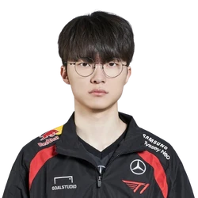

Mid laners are your high burst damage champions who can do it all—solo and as a team. For them, combat is a dangerous dance where they’re always looking for an opportunity to outplay their opponent.
Champion's tier list on mid
- Vex
- Ahri
- Sylas
All of Faker's Best Plays from the 2024 Worlds Finals
Watch on YouTube

Faker - The Unkillable Demon King
Lee "Faker" Sang-hyeok is one of the most legendary professional players in the history of League of Legends. He has been the cornerstone of T1 (formerly SK Telecom T1) since 2013 and is widely regarded as the greatest player of all time.
Key Highlights of Faker's Career:
- Three-Time World Champion 🏆🏆🏆 (2013, 2015, 2016) - Runner-up in 2017 and 2023.
- Mid Lane Mastery: Known for his incredible mechanics, deep champion pool, and clutch plays. Signature champions: LeBlanc, Zed, Ryze, Azir.
- Longevity and Consistency: Competing at the highest level for over a decade despite multiple roster changes.
- Cultural and Global Icon: Dubbed the "Unkillable Demon King", Faker has brought worldwide recognition to the LCK.
- T1 Loyalty: Unlike many pros, Faker has remained with T1 throughout his career and is now part-owner of the team.